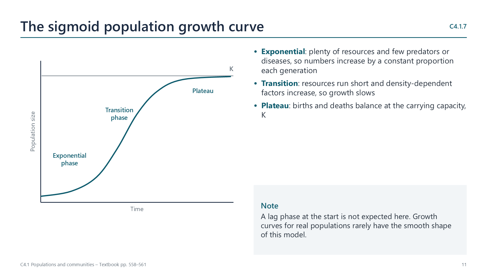
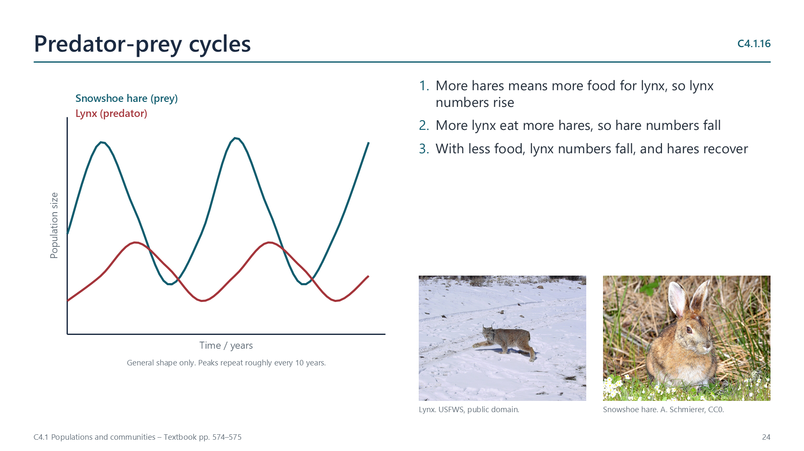
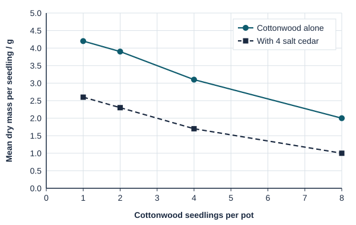
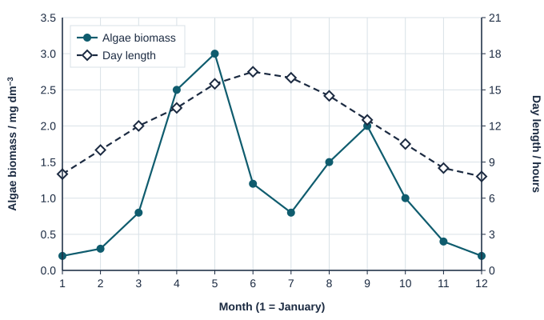
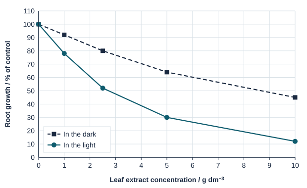

Written for this site from the class slides, with textbook page references for each statement. The chapter is on pages 548–577 of the course textbook. Image credits are on slide 35.
A population is a group of organisms of the same species living in the same area at the same time. Its members normally interbreed. One population is separated from another of the same species by reproductive isolation, for example by distance or a barrier.
C4.1.2
Why we sample
pp. 549–550
Counting every individual is usually impossible, so we count a sample and scale up to an estimate. The sample must be random, so that every part of the area has an equal chance of being sampled and the result is not biased.
C4.1.3
Random quadrats
pp. 550–551
For sessile organisms, place quadrats at random coordinates, count the individuals in each and find the mean. Population size = mean per quadrat × total area ÷ area of one quadrat. The standard deviation of the counts shows how much they vary, and so how evenly the organism is spread.
C4.1.4
Capture-mark-release-recapture
pp. 555–556
For motile organisms, capture and mark a sample (M), release them, then capture a second sample (N) and count the marked ones (R). The Lincoln index gives population size = (M × N) ÷ R. It assumes that marks are not lost, marked animals mix fully, and there are no births, deaths or migration between samples.
Population growth
C4.1.5
Carrying capacity
p. 557
The carrying capacity is the maximum population size that an environment can support. It is set by limited resources, such as food, water, territory and nesting sites for animals, and light, water and minerals for plants.
C4.1.6
Density-dependent control
pp. 557–558
Competition, predation and the spread of pathogens and pests all increase as a population becomes denser. Above the carrying capacity they raise deaths and reduce births, and below it they relax. This negative feedback keeps the population near the carrying capacity. Density-independent factors, such as floods or fires, can change numbers suddenly but do not do this.
C4.1.7
The sigmoid growth curve
pp. 558–561

In the exponential phase, resources are plentiful and limiting factors are weak. In the transition phase, density-dependent factors increase and growth slows. At the plateau, births and deaths balance at the carrying capacity. The return of the bearded vulture to the Swiss Alps is a growing population.
Watch out: a lag phase is not expected as part of this curve.
C4.1.8
Modelling growth with duckweed
p. 562
Count the fronds of duckweed (Lemna) in a container every day or two until the surface is covered. Plot the counts on a log scale against time on a normal scale: exponential growth gives a straight line, and the line curves away as growth slows.
Communities and relationships
C4.1.9
Communities
pp. 562–563
A community is all the interacting populations in an area, including plants, animals, fungi and bacteria. A community and its abiotic environment form an ecosystem.
C4.1.10
Competition and cooperation within a species
pp. 563–564
Members of a species have the same needs, so they compete for food, light, territory and mates, as when wildebeest males fight over territory. They also cooperate: hyenas hunt in groups, and leafcutter ant workers gather leaves to grow the fungus that feeds the colony.
C4.1.11
Relationships between species
pp. 564–565
Herbivory (bison and grass), predation (lynx and hare), interspecific competition (lions and leopards), mutualism (Rhizobium and clover), parasitism (ticks and deer) and pathogenicity (chytrid fungus in the evergreen robber frog).
C4.1.12
Mutualism
pp. 566–568
In legume root nodules, Rhizobium fixes nitrogen for the plant and receives sugars. Orchid seeds have no food store, so mycorrhizal fungi supply them with sugars and minerals; adult orchids later supply carbon compounds. In hard corals, zooxanthellae supply products of photosynthesis and receive shelter in sunlit water, carbon dioxide and nutrients.
Competition between species
C4.1.13
Invasive and endemic species
pp. 568–569
An invasive species, introduced by humans, often lacks its natural predators and pathogens, and may take a shared resource more effectively. Grey squirrels outcompete red squirrels for seeds in Britain. Local examples include the nutria, Himalayan balsam and Japanese knotweed.
C4.1.14
Testing for competition
pp. 569–571
Approaches include laboratory experiments, field observations by random sampling, and field manipulation by removing one species, as Connell did with barnacles. If a species does better without the other, competition is indicated but not proven.
C4.1.15
The chi-squared test for association
pp. 572–574

Record the presence or absence of two species in many random quadrats. Expected value = row total × column total ÷ grand total. Chi-squared is the sum of (O − E)2 ÷ E. For a 2 × 2 table there is 1 degree of freedom, and the critical value at p = 0.05 is 3.84. A larger value means the species are associated.
Control of populations
C4.1.16
Predators and prey
pp. 574–575
When snowshoe hares are plentiful, lynx have more food and increase. More lynx eat more hares, so hares fall, and then lynx fall too. The two populations cycle, with the predator lagging behind: predation is density-dependent control.
C4.1.17
Top-down and bottom-up control
pp. 575–576
In top-down control, a higher trophic level limits the one below, by predation or herbivory. In bottom-up control, the supply of nutrients or producers limits the levels above. Both are possible, but one usually dominates in a community.
C4.1.18
Allelopathy and antibiotics
pp. 576–577
In allelopathy, a plant such as bracken or a walnut tree releases chemicals that stop other plants germinating or growing. Fungi such as Penicillium secrete antibiotics that kill bacteria. In both, a chemical released into the environment deters competitors.
Videos
Select a video to play it here. Select it again to close it.
Print this guide and complete it as you work through the slides and videos. It asks for your own explanations, so close the notes while you try each section.
A printable worksheet covering all eighteen statements, from quick recall to data questions and a longer answer. It has 50 marks and takes about 45 minutes, or you can do one section at a time.
Questions built on realistic experimental data, in the style of Paper 1B and Paper 2. Work them on paper and show your working. 19 marks in total. Your teacher has the mark scheme.
Competition between tree seedlings
6 marks
Since dams stopped rivers flooding in the south-west of the USA, the invasive salt cedar (Tamarix) has replaced native cottonwood (Populus) along many rivers. Cottonwood seedlings were grown in pots at four densities, either alone or with four salt cedar seedlings. The mean dry mass of each cottonwood seedling was measured after one season.

Describe the effect of increasing cottonwood density on the mass of cottonwood seedlings grown alone. [1]
Calculate the percentage decrease in mass caused by salt cedar when one cottonwood seedling is grown per pot. [1]
Distinguish between intraspecific and interspecific competition, using these data. [2]
Salt cedar tolerates salty, dry soil better than cottonwood. Suggest how restoring natural floods could help cottonwood. [2]
Resting eggs in water fleas
7 marks
Water fleas (Daphnia) usually reproduce asexually, but can switch to sexual reproduction, making resting eggs that survive for years in lake mud. The graph shows day length and the biomass of algae (their food) in a lake over one year.

Identify the month in which food is most plentiful. [1]
Daphnia were kept in four combinations of day length and food, and the percentage of females producing resting eggs was recorded.
High food
Low food
Long days (16 h)
2%
18%
Short days (10 h)
21%
64%
Discuss which conditions favour the production of resting eggs. [2]
Deduce, with a reason, whether many resting eggs are likely to be made in May. [1]
Suggest the advantages to Daphnia of reproducing asexually at some times and sexually at others. [3]
A tree that poisons its neighbours
6 marks
Tree of heaven (Ailanthus altissima) is an invasive tree whose leaves release chemicals into the soil. An extract of its leaves was added at different concentrations to seeds of alfalfa, a crop plant, kept in the light or in the dark. After 5 days, root growth was measured as a percentage of the growth in water alone.

State the root growth in the light at 5 g dm−3 of extract. [1]
Compare the effect of the extract in the light and in the dark. [2]
Suggest two reasons for testing the extract both in the light and in the dark. [2]
Explain how releasing these chemicals could help tree of heaven become invasive. [1]
Practical
Estimating population size with quadrats
Field45 minC4.1.2, C4.1.3
You will need: Quadrats, tape measures, random number table
Mark out a grid and use random numbers as coordinates
Count a sessile plant, such as daisies, in 20 quadrats
Calculate the mean per quadrat
Scale up to estimate the population of the whole area
Safety: Check the site first and wash hands afterwards. In bad weather, use counters scattered on a classroom floor.
Carry this out with your teacher's supervision and follow your school's lab rules.
Nature of science and TOK
Nature of science
Measurements
Sampling lets us estimate populations that cannot be counted, with the assumptions and uncertainty stated.
Theory of knowledge
Can an estimate count as knowledge?
A population estimate is never exact. Consider how stating uncertainty affects the strength of a claim.
Think deeper
Predict first, then check. Each one opens on the Think deeper pages.